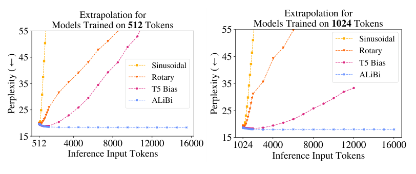

Self-attention can't tell "dog bites man" from "man bites dog"
Position has to be supplied from outside the operation, and the scheme most models now use falls apart not far past the length it trained on.
Why this matters
Change the order of a sentence's words and you can flip what it says. "The dog bit the man" and "The man bit the dog" use the same five words and report opposite events, and a language model tells them apart without trouble. The operation the model runs on those words does not read them in order at all. This lesson follows the gap between the two. First, why the core operation is blind to word order. Then how position is added back so the model can use it. And last, why the newest way of adding it still stumbles the moment a sentence runs longer than anything it saw in training.
- 01
- An attention head is a weighted average that computes its own weights: the operation this lesson builds on, worked through by hand.
- 02
- The instant a model writes a token, it becomes fact: the causal mask, the left-to-right reading this lesson leans on once.
Attention sees a bag of words
Every layer of a transformer is built on one operation, self-attention, and an earlier lesson worked through its arithmetic. For each word, the operation returns a weighted average of all the other words, and it sets the weights itself by measuring how well each word matches the one doing the asking.
The measuring is where order goes missing. To weigh how much "dog" matters to "bit", the operation compares those two words' vectors and reads off a single number. The comparison looks at the two vectors and nothing else. It has no term for the fact that "dog" came right before "bit", or three words after it. So the blend the operation builds for "bit" is assembled from the same parts, with the same weights, wherever in the sentence the other words happen to sit.
Run "the dog bit the man" through the operation and it builds a new vector for "bit" out of the other four words, each weighted by how well it matches. Run "the man bit the dog" and it builds that vector out of the same four words, weighted the same way, because not one of the comparisons changed. The two sentences report opposite events. To the bare operation they are the same bag of words.1
This is not a quirk of one model. A transformer is, by construction, invariant to the order of its input: permute the words and the math hands back the same answers, permuted the same way.1 The original transformer paper stated the consequence plainly. With no recurrence and no convolution to track sequence, the model has to be handed information about position from outside, or it cannot use order at all.2
One caveat. That blindness is exact for the bare operation. The models you actually use are decoders that read left to right: when one processes a word, the causal mask hides every word that comes after it, so each word sees only the ones before. The masking leaks a little order for free. A word can, in effect, count how many words precede it, which is a rough stand-in for where it sits, and a model given nothing else can still recover some of that.3 But the count is a weak signal, and the operation underneath is still order-blind, so every production model supplies position on purpose.
Position gets added to the vectors
The first fix is the one still drawn in most diagrams. Before the words reach attention, the model adds a second vector to each one that says where it sits. The original paper used a fixed pattern of sine waves: each position gets its own set of values, built from waves of different wavelengths, summed straight into the word's vector.2 Nothing is learned. The pattern is identical for every model trained this way. Now "dog" in slot two and "dog" in slot four reach attention as different vectors, and the operation that could not see order has order baked into what it reads.
The next models learned the pattern instead of fixing it. GPT-1 kept the idea of one position vector added per slot, but let training choose the numbers rather than fix them by formula.4 BERT did the same on the other side of the architecture, summing a learned position vector into every input token alongside the word itself.5 Learning the vectors buys a little and costs something concrete: a learned table has a fixed number of rows. BERT's stops at 512, so a 513th word has no position vector at all, and the model simply cannot take a longer input.5
From a word's slot to the gap between words
Absolute position, the fact that a word sits in slot five, is not obviously the thing a model needs. What usually matters is the gap between two words. "Not" three words before "good" does specific work, wherever in the sentence the phrase falls. Shaw and colleagues rebuilt the encoding around that gap. Instead of stamping each word with its slot at the input, they added a learned representation of the distance between two words directly into the attention comparison. Now the operation weighs "dog" against "bit" knowing the two sit one apart.6 On translation this beat absolute position by 1.3 BLEU points on English-to-German, a small but real gain, and adding absolute position back on top of it bought nothing further.6
The scheme running inside most models today is a later relative idea: rotary position embedding, or RoPE. Rather than add a position vector, RoPE rotates each word's query and key, the two projections attention compares, by an angle set by the word's position. When the operation later compares two words, their rotations combine, and the comparison comes out depending only on the difference between their positions.7 The gap falls out of the geometry. LLaMA, the open model family a great deal of current work is built on, dropped absolute embeddings and put RoPE at every layer, which is how a 2021 paper became a default.8
Past the training length, the schemes diverge
A relative scheme sounds like it should handle any length. If the model only cares about the gap between two words, why should a longer sentence trouble it? It does. Models using RoPE fail to work past the sequence length they were trained on: feed one a passage longer than anything in training and its output degrades.9 Whole methods exist only to stretch a trained RoPE model to longer inputs after the fact. Position interpolation, NTK scaling, and YaRN are all patches of this kind, and YaRN reports doing the stretch with roughly ten times fewer tokens than earlier fixes.9 If RoPE handled length on its own, none of them would need to exist.
You can watch the failure. ALiBi adds no position vectors at all. Instead it subtracts a penalty from each attention comparison in proportion to how far apart the two words sit, and it was built to extrapolate.10 Its authors trained models at one length and tested them well past it.

A model trained on 1024 tokens keeps its footing out past 2048, while the sinusoidal and rotary curves shoot upward the moment the input passes the length they trained on. It does this while training 11% faster.10 ALiBi buys that by construction. Its penalty grows with distance, so far-apart words are pushed toward irrelevance, which is why length stops hurting and also why the model reads within a narrower window than the raw input length suggests.
So which encoding is best? No one scheme has won, and the winner depends on the test. Relative beat absolute on translation.6 ALiBi beat sinusoidal and rotary on length.10 And on a set of small reasoning tasks, a decoder given no positional encoding at all, leaning entirely on the order the causal mask leaks, generalized to longer inputs better than absolute, rotary, and ALiBi, at no extra cost.11 That last result comes from small models on algorithmic problems, not the large general-purpose models most people use, and none of the sources here names a single scheme as settled best for those.1 This is the floor of the descent, the step below which nothing changes the answer: the people building the systems are still guessing here too.
The takeaway
Self-attention, the operation under every transformer, cannot tell "the dog bit the man" from "the man bit the dog." To it they are the same handful of words. Everything a model knows about order is added to that operation on purpose: a fixed pattern of waves at first, then learned vectors, then relative schemes that encode the gap between two words, and today the rotary scheme that rotates each word by its position. The mechanism is settled. A finished model is not order-blind. What is not settled is reach. The relative schemes made the gap between two words the unit of position, but none of them made a model work past the length it trained on. That is why a small industry of patches exists to stretch them, and why a model with no positional encoding at all can still win on the right task. When someone says a model "understands" word order, the honest picture is narrower: it was handed order from outside, in one of several ways that still disagree about the longest sentences.
- 01
- RoFormer: Enhanced Transformer with Rotary Position Embedding: the RoPE paper, for how the rotation makes the score depend on the gap.
- 02
- YaRN: Efficient Context Window Extension of Large Language Models: one of the methods built to stretch a trained model past its length.
Sources
- arXiv · Dufter, Schmitt & Schütze, "Position Information in Transformers: An Overview"
- arXiv · Vaswani et al., "Attention Is All You Need"
- arXiv · Haviv et al., "Transformer Language Models without Positional Encodings Still Learn Positional Information"
- OpenAI · Radford et al., "Improving Language Understanding by Generative Pre-Training"
- arXiv · Devlin et al., "BERT: Pre-training of Deep Bidirectional Transformers for Language Understanding"
- arXiv · Shaw et al., "Self-Attention with Relative Position Representations"
- arXiv · Su et al., "RoFormer: Enhanced Transformer with Rotary Position Embedding"
- arXiv · Touvron et al., "LLaMA: Open and Efficient Foundation Language Models"
- arXiv · Peng et al., "YaRN: Efficient Context Window Extension of Large Language Models"
- arXiv · Press et al., "Train Short, Test Long: Attention with Linear Biases Enables Input Length Extrapolation"
- arXiv · Kazemnejad et al., "The Impact of Positional Encoding on Length Generalization in Transformers"